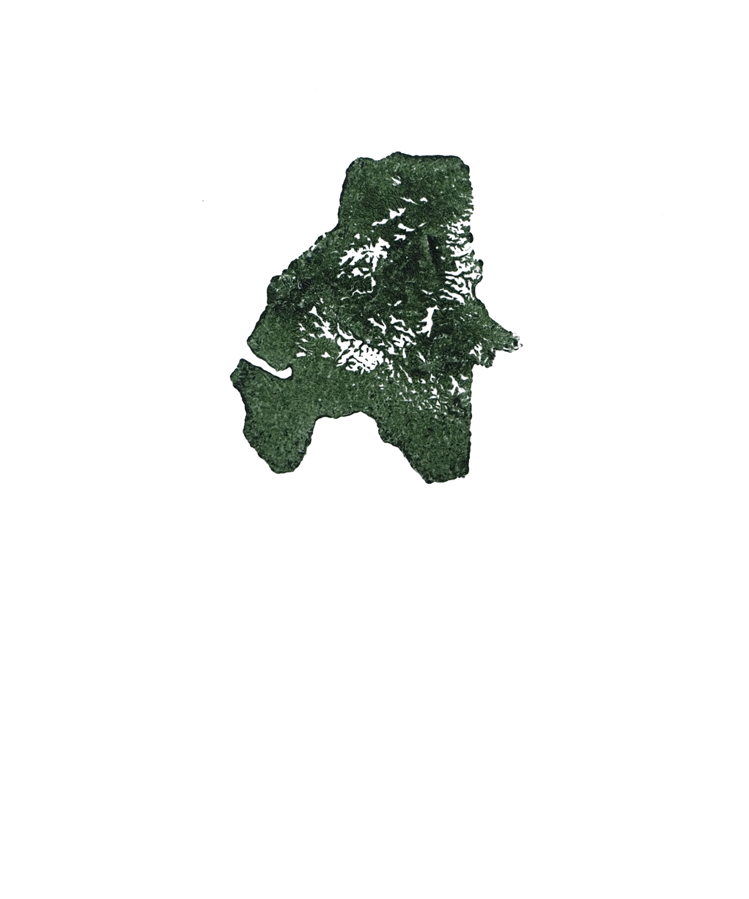
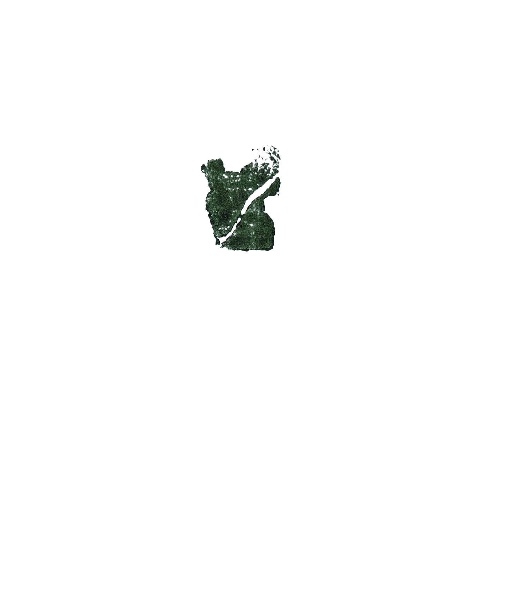
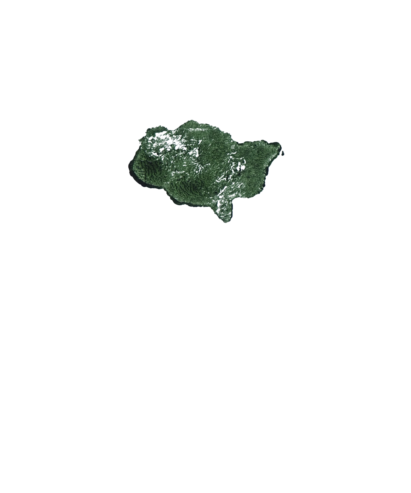

I know that I am not alone.

Your browser does not support the audio element.
Clara
Atlanta, US
Your browser does not support the audio element.
Agnieszka
Warszawa, Poland
Your browser does not support the audio element.
Ola
Warszawa, Poland
Your browser does not support the audio element.
Alka
Chania, Greece
Your browser does not support the audio element.
Anthony
East Hampton, US

Your browser does not support the audio element.
Jillian
Edmonton, Canada
Your browser does not support the audio element.
Hannah
Glasgow, Scotland
Your browser does not support the audio element.
Sarah
Inner Mongolia

Your browser does not support the audio element.
Hannah
Kent, UK
Your browser does not support the audio element.
Katie
London, UK
Your browser does not support the audio element.
Morgan
Minneapolis, US
Your browser does not support the audio element.
Shreyans
Mumbai, India
Your browser does not support the audio element.
Rachel
New York, US
Your browser does not support the audio element.
Moon
Seul, Korea
Your browser does not support the audio element.
Tal
Tel Aviv, Israel